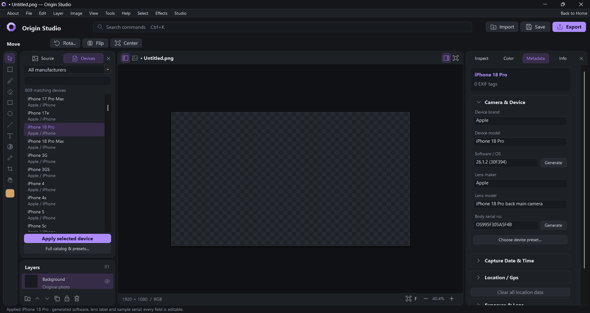
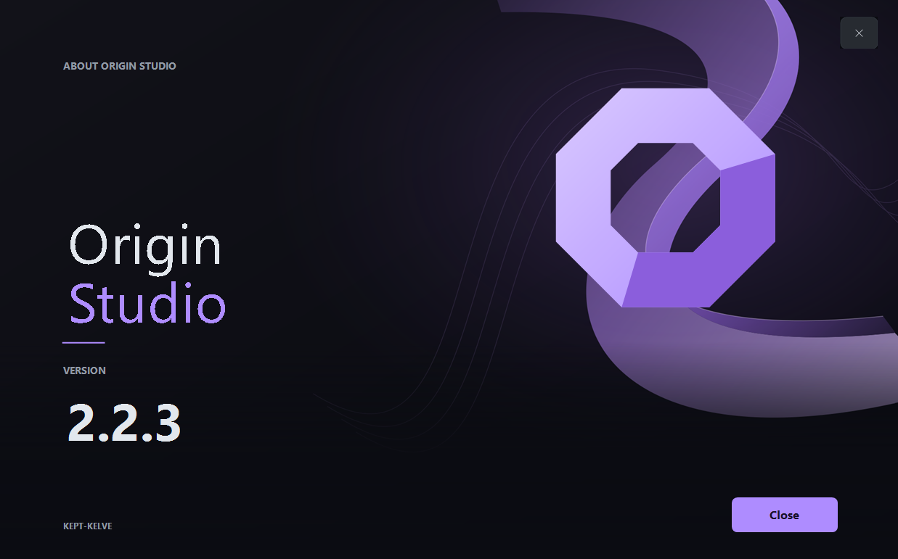

✦
Photo editing
Work with editable layers, shapes, text, masks and image adjustments.
Powerful photo editing, flexible layers and precise metadata controls, together in one desktop studio.

Work with editable layers, shapes, text, masks and image adjustments.
Inspect and edit camera details, lens data, capture dates and locations.
Choose from a broad catalog of devices or customize your own profiles.
A dedicated application for Windows and macOS. Your editor, not a browser tab.
A focused dark interface, refined lavender details and space for your work.

Release downloads are managed on GitHub. Choose the build for your computer.
Windows 10/11 • 64-bit
Windows releases ↗Installer and portable builds, where published.Intel & Apple Silicon • Native app
macOS releases ↗Drag the app from the DMG into Applications, when published.Before publishing: set your GitHub username and repository in config.js. Only upload verified release binaries; this site does not pretend an unfinished Mac port is complete.